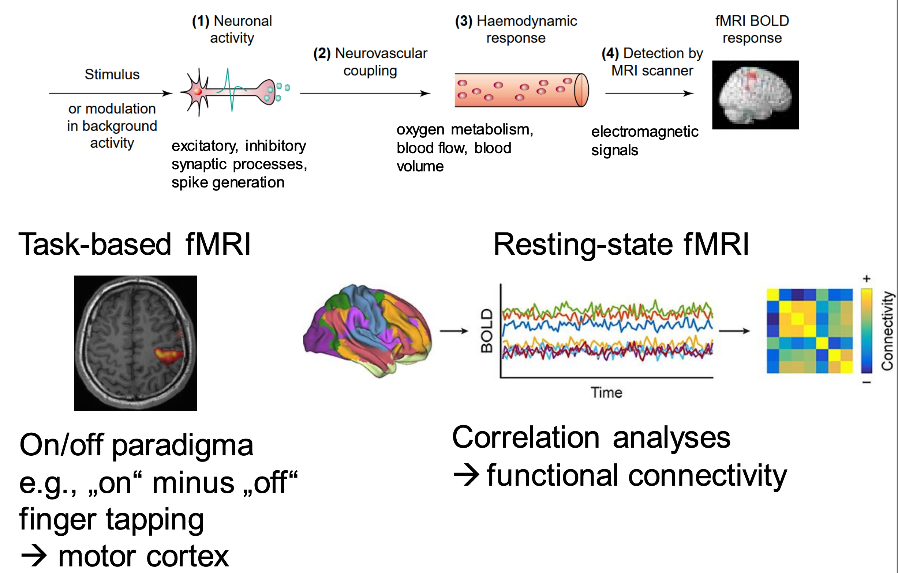
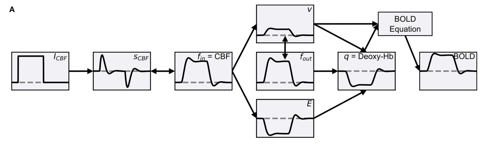
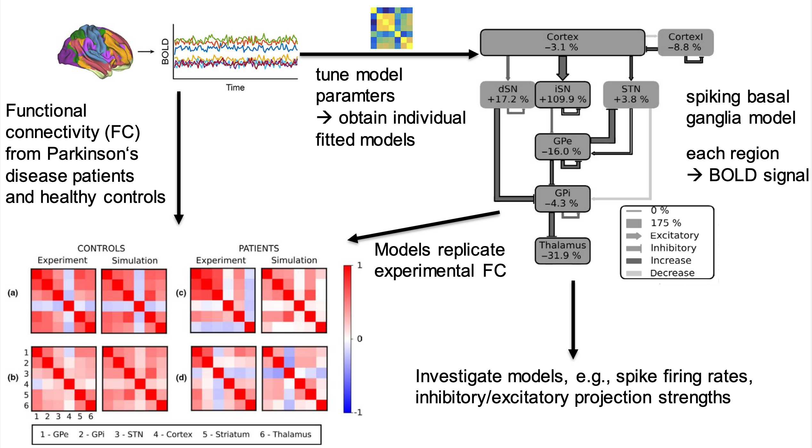

BOLD signals
fMRI and BOLD signals

Balloon models

The provided BOLD models follow the Balloon model (Buxton et al., 1998) with the different variations studied in (Stephan et al., 2007). Those models all compute the vascular response to neural activity through a dampened oscillator:
\frac{ds}{dt} = \phi \, I_\text{CBF} - \kappa \, s - \gamma \, (f_{in} - 1)
\frac{df_{in}}{dt} = s
This allows to compute the oxygen extraction fraction through the inflated balloon model:
E = 1 - (1 - E_{0})^{ \frac{1}{f_{in}} }
The (normalized) venous blood volume is computed as:
\tau_0 \, \frac{dv}{dt} = (f_{in} - f_{out})
f_{out} = v^{\frac{1}{\alpha}}
The level of deoxyhemoglobin into the venous compartment is computed by:
\tau_0 \, \frac{dq}{dt} = f_{in} \, \frac{E}{E_0} - \frac{q}{v} \, f_{out}
Using the two signals v and q, there are two ways to compute the corresponding BOLD signal:
- N: Non-linear BOLD equation:
BOLD = v_0 \, ( k_1 \, (1-q) + k_2 \, (1- \dfrac{q}{v}) + k_3 \, (1 - v) )
- L: Linear BOLD equation:
BOLD = v_0 \, ((k_1 + k_2) \, (1 - q) + (k_3 - k_2) \, (1 - v))
Additionally, the three coefficients k_1, k_2, k_3 can be computed in two different ways:
- C: classical coefficients from (Buxton et al., 1998):
k_1 = (1 - v_0) \, 4.3 \, v_0 \, E_0 \, \text{TE}
k_2 = 2 \, E_0
k_3 = 1 - \epsilon
- R: revised coefficients from (Obata et al., 2004):
k_1 = 4.3 \, v_0 \, E_0 \, \text{TE}
k_2 = \epsilon \, r_0 \, E_0 \, \text{TE}
k_3 = 1 - \epsilon
This makes a total of four different BOLD model (RN, RL, CN, CL) which are provided by the extension.
Defining a custom model is easy in ANNarchy, as we have linear first-order ODES as with rate-coded neurons!
balloon_RN = BoldModel(
parameters = """
phi = 1.0 ; kappa = 1/1.54
gamma = 1/2.46 ; E_0 = 0.34
tau = 0.98 ; alpha = 0.33
V_0 = 0.02 ; v_0 = 40.3
TE = 40/1000. ; epsilon = 1.43
r_0 = 25. ; second = 1000.0
""",
equations = """
# CBF input
I_CBF = sum(I_CBF)
ds/dt = (phi * I_CBF - kappa * s - gamma * (f_in - 1))/second
df_in/dt = s / second : init=1, min=0.01
# Balloon model
E = 1 - (1 - E_0)**(1 / f_in) : init=0.3424
dq/dt = (f_in * E / E_0 - (q / v) * f_out)/(tau*second) : init=1, min=0.01
dv/dt = (f_in - f_out)/(tau*second) : init=1, min=0.01
f_out = v**(1 / alpha) : init=1, min=0.01
# Revised coefficients
k_1 = 4.3 * v_0 * E_0 * TE
k_2 = epsilon * r_0 * E_0 * TE
k_3 = 1.0 - epsilon
# Non-linear BOLD equation
BOLD = V_0 * (k_1 * (1 - q) + k_2 * (1 - (q / v)) + k_3 * (1 - v))
""",
inputs=['I_CBF']
)The BoldModel can then be passed to a BoldMonitor that will map the output variable (r) of one or more populations onto the input I_CBF and apply the balloon model:
m_bold = BoldMonitor(
populations = [pop], # recorded populations
bold_model = balloon_RN(), # BOLD model to use (default is balloon_RN)
mapping = {'I_CBF': 'r'}, # mapping from pop.r to I_CBF
normalize_input = 2000, # time window to compute baseline.
recorded_variables = ["I_CBF", "BOLD"] # variables to be recorded
)The BoldMonitorcan be used as a regular Monitor to record the BOLD signal during a (long) simulation:
simulate(20000) # 20s with low noise
bold_data = m_bold.get("BOLD")Download the Jupyter notebook: BoldMonitoring.ipynb or run it directly on colab.
Download the Jupyter notebook: BoldModel.ipynb or run it directly on colab.
Download the Jupyter notebook: BoldSearch.ipynb or run it directly on colab.
Basal ganglia pathway changes in Parkinson’s disease
Maith et al. (2020)
A computational model-based analysis of basal ganglia pathway changes in Parkinson’s disease inferred from resting-state fMRI.
European Journal of Neuroscience. doi:10.1111/ejn.14868

Download the Jupyter notebook: BoldParkinson.ipynb or run it directly on colab.